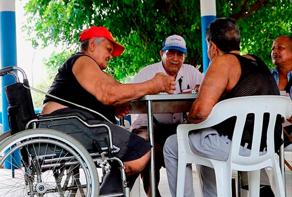
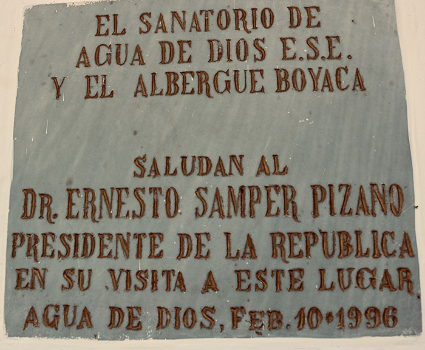
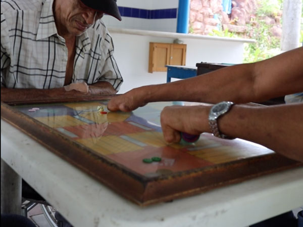

“No se sabe que es más estigmatizante la enfermedad, el ciudadano o el nombre mismo de Agua de Dios”, comenta el periodista Jaime Molina que, con su profesión, ha viajado por el mundo luchando contra el estigma que aún no tiene cura y que por lo tanto, dificulta la bienvenida de los pacientes a la vida civil e incluyente ya que, hablar de rechazo social hoy en día con los pacientes de Hansen y con otros afectados, es necesitar más oídos que bocas para escuchar lo que muchos callan.
Y así, como se menciona en términos generales lo que es ser rechazado y discriminado por la sociedad que desconoce la existencia de la lepra en el país, José Castañeda, el historiador del municipio y víctima también del rechazo social desde su niñez, expresa que aquel estigma es la piedra en el zapato que le ha impedido su crecimiento laboral tras poner en su hoja de de vida el nombre que no todos quieren escuchar.
Pero si estas personas sanas han sido víctimas de esa estigmatización social, los pacientes de Hansen lo han sido mucho má cuando el mismo Sanatorio de Agua de Dios tuvo que intervenir e implementar un certificado que, como salvavidas, respaldará la vida del enfermo. Este al titularse como "curado social", es el amuleto que debe cargar el paciente entre sus documentos personales para evitar un rechazo más.
“La persona curada social es la persona que sale del programa, que ya no esta tomando tratamiento, curado en la secretaria, en el Ministerio, en el hospital. Ya es una persona que entra hacer un proceso de seguimiento, que no está injiriendo la PQT (tratamiento), que le dan de alta”, explica Rosalba González, coordinadora del programa de lepra en Agua de Dios.
Sin embargo, independientemente de ser una solución que intenta disminuir y respaldar la vida del enfermo que ha vivido con el estigma desde tiempos remotos, es tanto para el periodista Jaime Molina como para la abogada Andrea Garzón, la puesta en escena que genera una nueva estigmatización social ya que, de manera indirecta, el paciente de Hansen se ve sometido a revelar su intimidad para ser aceptado en la sociedad.
Y esa situación la vive consecutivamente la paciente María Concepción Jaramillo, quien tiene que revelar su condición de salud cada vez que desea salir del municipio. “Yo cuando salgo, en el certificado de enfermo para viajar ahí dice “la señora María Concepción Jaramillo curada social, se está tratando en el sanatorio de Agua de Dios”, porque para allá (Córdoba) hay 72 retenes entonces yo muestro mi certificado"”, explica.
Pero independientemente de la connotación y percepción que tenga la frase "curado social", pacientes de Hansen también cuenta con el apoyo económico por parte del Estado, al recibir mensualmente un salario mínimo que, durante el gobierno del ex presidente Ernesto Samper, se legalizó junto a la ley 380 de 1997. Dicha ley se dio luego de las constantes visitas que el ex presidente hizo en el municipio, tras conmoverse por la situación socioeconómica que imposibilita al paciente trabajar. Sin embargo, mientras pacientes agradecen el subsidio otrogado por parte del Estado, el periodista no desmiente que esa labor económica que tiene con los enfermos es por la misma conciencia o remordimiendo de no haber laborado bien en tiempos pasados.
“Yo siempre lo culpo a él (Estado) sobre todo en el tema del estigma, el más creador de todos los estigmas. A mi me preguntan que porque la enfermedad de Hansen tiene un subsidio a todos los que tenemos el bacilo de Hansen que somos ya “los famosos curados sociales” o los que acaban de llegar y que alcanza el cupo para darles a ellos, yo digo que eso es un acto de contrición, es un acto de remordimiento. Es un remordimiento del Estado haber aprobado eso, porque hay enfermedades súper peores” enfatiza de manera ruda y con voz alta intentado ser escuchado por los demás.
Y no es el único que se encuentra inconforme. La abogada especialista en Derechos Humanos, manifiesta que esa ayuda económica no solventa ni tampoco soluciona la afectación emocional y social que dejó en el enfermo de lepra, las políticas implementadas del momento.
Ahora bien, si se conocen las versiones frente a la ayuda o no que tienen los pacientes con relación a los factores sociales y/o económicos que brinda el gobierno, ¿Porqué hay pacientes de Hansen viviendo en los albergues si tienen un sueldo, un certificado y una libertad de regresar a su tierra de origen?
Siendo ese el caso de Dagoberto Trespalacios de 72 años que al relatar su situación y llegar desde Mompox, Bolívar, a Agua de Dios a la edad de 22, es uno de los muchos casos que se presenta en los albergues tras conocer también, la vida de Margarita Gonzáles, la mujer que estuvo en el antiguo lazareto de Contratación, Santander a la edad de cuatro años y llegar a Agua de Dios a los 15; hoy en día tiene más de 80 y no pensó regresar a su tierra Santandereana debido a que no conoce más allá que los alrededores del departamento de Cundinamarca.
“Como le digo, si hubiera estado bien consciente de las cosas, uno de joven que piensa, reflexiona y que esto; pero de pequeñito uno de 4 años no sabe nada, pa´ donde lo llevan, pa´ donde lo traen, ni nada...", es la respuesta indirecta que deja comprender no solo el porqué la mayoría de las personas de la tercera edad se encuentran allí, sino también, el abuso por quien no tuvo voz ni voto en la época de la persecución.
Sí el Estado no puede dar respuesta frente al paradero de miles de familiares que quedaron desamparados, ¿Qué podría hacer para resarcir a estas personas?
“El Estado puede reparar estas personas no solamente en temas patrimoniales. Estas personas merecen tener un conocimiento público, que la gente del común conozca lo que se vivió y lo que se padeció y por tanto, se genere un conocimiento histórico de su vida. Que se haga una representación puesta en escena de lo que se vivió y lo que fue actualmente”, dice de nuevo la abogada al intentar explicar que Colombia por ser un país o un Estado social de derecho, debe hacer respetar toda condición que genere disciminación.